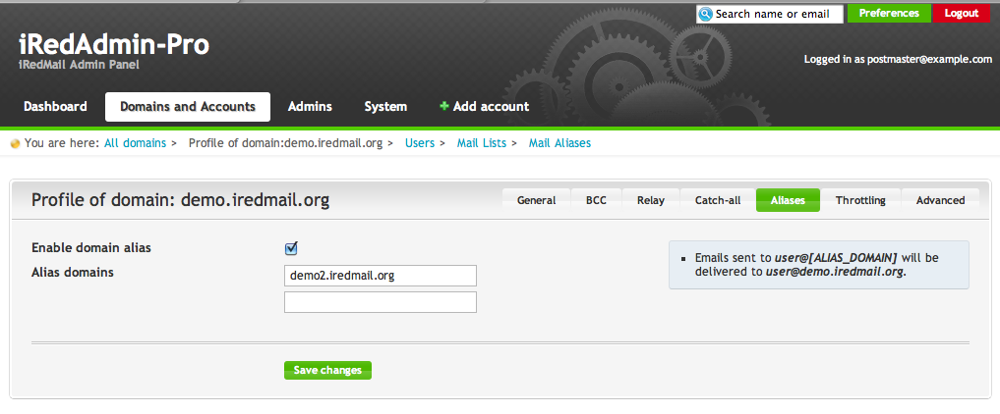

Attention
Check out the lightweight on-premises email archiving software developed by iRedMail team: Spider Email Archiver.
Let's say you have a mail domain example.com hosted on your iRedMail server,
if you add domain name domain.ltd as an alias domain of example.com, all
emails sent to username@domain.ltd will be delivered to user
username@example.com's mailbox.
With iRedAdmin-Pro, you can simply add alias domain name in domain profile page,
under tab Aliases.
Screenshot:

Adding alias domain is as simple as inserting one SQL record. Let's create two
alias domains (alias-1.com, alias-2.com) for the primary domain
example.com with SQL commands below (Note: we use MySQL for example, but
PostgreSQL uses exactly same INSERT commands):
-- Connect to `vmail` database.
sql> USE vmail;
-- Create alias domain `alias-1.com`
sql> INSERT INTO alias_domain (alias_domain, target_domain) VALUES ('alias-1.com', 'example.com');
-- Create alias domain `alias-2.com`
sql> INSERT INTO alias_domain (alias_domain, target_domain) VALUES ('alias-2.com', 'example.com');
That's all.